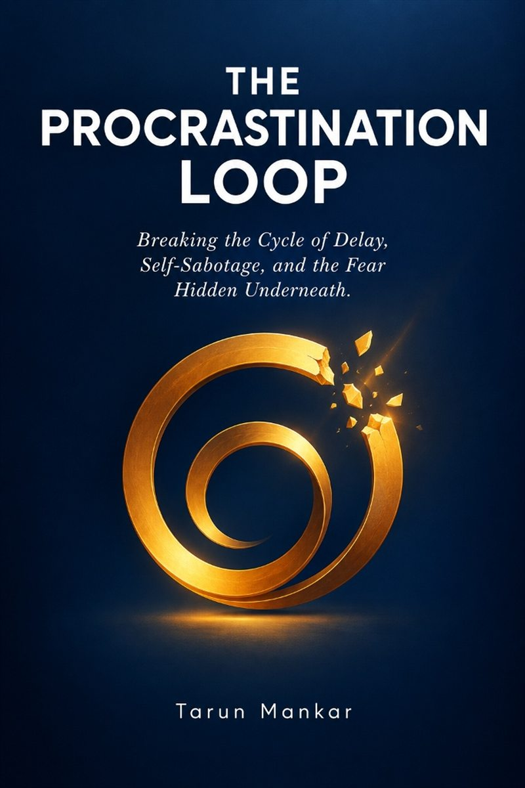

Why You Keep Delaying: The Neurobiology of the Procrastination Freeze Response

You sit in front of your laptop. The deadline is looming, the stakes are real, and you sincerely want to get it done. Yet the moment you open the document, an invisible leaden weight presses into your chest. Your limbs feel heavy, your mind fogs over, and within seconds, your hand reaches for your phone or opens ten unrelated browser tabs.
Hours later, you are trapped in the familiar vortex of self-loathing: "Why do I do this to myself? Why can't I just be disciplined like everyone else?"
Here is the truth that traditional productivity gurus will never tell you: Chronic procrastination is not a time-management problem. It is an autonomic nervous system freeze response.
The Evolutionary Biology of Task Paralysis
According to Polyvagal Theory, developed by Dr. Stephen Porges, your autonomic nervous system operates in three distinct neurophysiological states:
- Ventral Vagal (Safe & Social): Calm, engaged, creative, and capable of sustained focused concentration.
- Sympathetic (Mobilized Fight-or-Flight): High adrenaline, urgency, anxiety, and panic-driven motion.
- Dorsal Vagal (Immobilization & Freeze): Metabolic shutdown, numbing, brain fog, apathy, and muscular collapse when a perceived threat feels inescapable.
When you face an important task that carries unconscious emotional freight — fear of judgment, perfectionistic self-criticism, fear of failure, or chronic energetic exhaustion — your nervous system does not see a simple task list. It perceives an existential threat.
If your sympathetic nervous system cannot "fight" the task or "flee" the deadline, it defaults to the oldest survival mechanism in mammalian biology: the dorsal freeze state. Your body mechanically immobilizes you to conserve vital resources.
Why Planners, Timers, and Willpower Deepen the Paralysis
When people find themselves procrastinating, their instinctive reaction is to double down on discipline: buy a new planner, install strict website blockers, set a 25-minute Pomodoro timer, or berate themselves in their head.
However, when your body is already in a protective dorsal freeze, applying cognitive pressure and demanding output acts as an additional threat stimulus. Your nervous system interprets the harsh internal voice as another predator, causing the freeze response to tighten its grip.
You cannot think your way out of a state you were immobilized into by your biology. To break the delay loop, you must first thaw the somatic nervous system.
The 60-Second Somatic Thawing Protocol
Before demanding a single line of work from your brain, use these three biological steps to guide your autonomic nervous system out of dorsal freeze and back into ventral flow:
- Bilateral Heel Drops (Proprioceptive Grounding): Stand up from your chair. Rise onto your tiptoes, then let your heels drop firmly onto the ground so you feel a slight mechanical reverberation through your ankles, calves, and pelvis. Repeat 5 to 7 times. This sharp physical proprioceptive feedback activates mechanoreceptors in your feet, jarring the brainstem out of metabolic shutdown.
- The 360-Degree Horizon Scan (Ventral Safety Orienting): Keep your neck relaxed and slowly let your eyes drift around the physical room. Find three distant objects that are pleasing or neutral (a plant, a shadow, a bookshelf corner). Allow your eyes to rest on each for 4 seconds. Letting your ocular muscles track the perimeter sends proof to your amygdala: there is no predator in the room.
- The 2-Minute Micro-Action (Decoupling Perfectionism): Do not tell your brain you are going to finish the project. Give yourself permission to do the ugliest, sloppiest version possible for exactly 120 seconds. Once the physical body initiates movement, the perceived energetic barrier collapses, and the brain enters natural momentum.

The Procrastination Loop
Breaking the Cycle of Delay, Self-Sabotage, and the Fear Hidden Underneath
- How to identify the 4 somatic triggers that trick your nervous system into task freeze
- Somatic bottom-up protocols to thaw brain fog, leaden fatigue, and avoidance loops
- Breaking the perfectionist-shame spiral that fuels midnight deadline panics
- Rewiring your autonomic window of tolerance for effortless, calm execution
Moving from Shame to Somatic Sovereignty
The next time you catch yourself procrastinating, do not apologize, do not beat yourself up, and do not make frantic promises you cannot keep.
Instead, pause and ask the biological question: "What threat is my body perceiving right now, and how can I signal physical safety to my nervous system?"
When you treat your body with neurobiological respect rather than disciplinary brutality, resistance dissolves. Focus stops feeling like a brutal tug-of-war and becomes your natural, default state of flow.
Frequently Asked Questions
Ready to Break Free from the Freeze Loop?
The Procrastination Loop provides the complete somatic roadmap to dismantle avoidance patterns, rewire safety into your body, and reclaim effortless focus.
⚡ Get "The Procrastination Loop" on Amazon (Kindle & Print) ↗